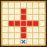

| Lv: | 150 |
|---|---|
| HP: | |
| MP: | |
| ATK: | |
| DEF: | |
| AGL: | |
| WIS: | |
| Move: | |
| Weight: | 60 |
| Weaknesses: |  |
 |
/ |  |
 |
|---|---|---|---|---|---|
| Resistances: |  |
 |
/ |  |
 |
| Immunities: |  |
| Family: |  |
Role: |  |
Element: |  |
|---|
Note: All perks/abilities denoted with an * are using unofficial translations
| Abilities | ||||||
|---|---|---|---|---|---|---|
| Level | Type | Name | MP | Element | Range | Description |
| 1 |  |
Atoning Blade* 滅罪剣 |
50 |  |
 Rhombus (L) |
Deals minor physical damage (100% potency) to all enemies in area of effect, generates spaces in area of effect that raise damage dealt by 15% for 3 turns for allies on those spaces only |
| 36 |  |
Parting Wind Sickles* 決別のかまいたち |
114 | |
 Straight Line |
Deals major Woosh-type martial damage proportional to ATK to all enemies in area of effect, very rarely lowers Hero Res for 3 turns |
| 50 |  |
Parting Kafrizz* 決別のメラゾーマ |
113 |  |
 2-4 |
Deals major Frizz-type spell damage proportional to ATK to 1 enemy, occasionally raises the user's ATK for 3 turns |
| 82 |  |
Reminiscent Pearly Gates* 在りし日のグランドクロス |
110 | |
 Front |
Deals major physical damage (480% potency) to all enemies in area of effect, raises the user's physical and spell potency/recovery for 3 turns Turns needed: 3 turns (Times usable: 2) |
| Base Perks | ||
|---|---|---|
| Level | Name | Description |
| 1 | Max HP +30 | Raises max HP by 30 |
| 1 | ATK +15 | Raises max ATK by 15 |
| 1 | Departing Aura* 決別のオーラ |
Battle start, action start, or when revived: Reduces damage taken by 20% if the user's HP is 30% or over |
| 110, 120, 130, 140 | Parting Kafrizz* potency +2% | Raises Parting Kafrizz* potency by 2% |
| 110, 120, 130, 140 | Reminiscent Pearly Gates* potency +2% | Raises Reminiscent Pearly Gates* potency by 2% |
| 150 | Ability Potency/Recovery +2% | Raises ability potency/recovery by 2% |
| Awakening Perks | ||
|---|---|---|
| Awakening | Name | Description |
| 1 | Move +1 | Raises Move by 1 |
| 2 | Bang Res +25 | Raises Bang resistance by 25 |
| 3 | Physical & Spell Tricks* 物理と呪文のコツ |
Lowers physical and spell ability MP cost by 10%, raises potency and recovery by 10% |
| 3, 5 | Parting Kafrizz* potency +5% | Raises Parting Kafrizz* potency by 5% |
| 3, 5 | Reminiscent Pearly Gates* potency +5% | Raises Reminiscent Pearly Gates* potency by 5% |
| 4 | Woosh Res +25 | Raises Woosh resistance by 25 |
| 5 | You so nearly had it in the bag | Action start on odd turns until turn 10: Raises ATK for 3 turns Action start on even turns until turn 10: Attacks with Atoning Blade* if enemy is within large rhombus area |
| 1, 2, 3, 4, 5 | Stats Up | Raises HP, MP, ATK, DEF, WIS and AGL by 5% |